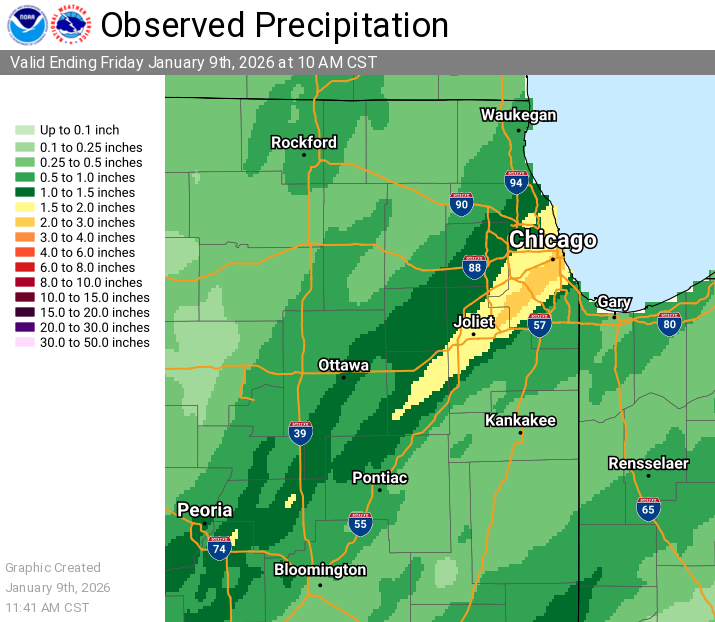

Up to 3 inches of rain drenched Chicago overnight Thursday to Friday, leading to hundreds of calls to 311 for flooded streets and basements.
A National Weather Service bulletin reported 50 mph wind gusts and temperatures reaching 60° at O'Hare International Airport overnight.
WBEZ reported the heaviest flooding complaints came in from Chicago's West and Southwest sides, including the following neighborhoods: